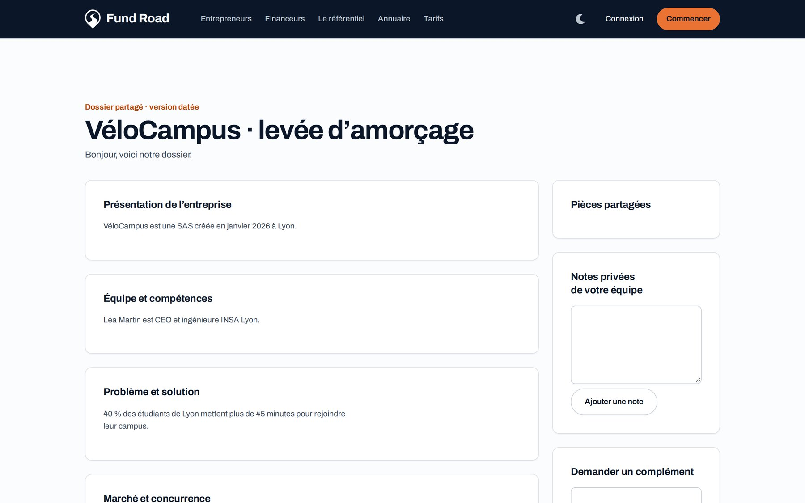
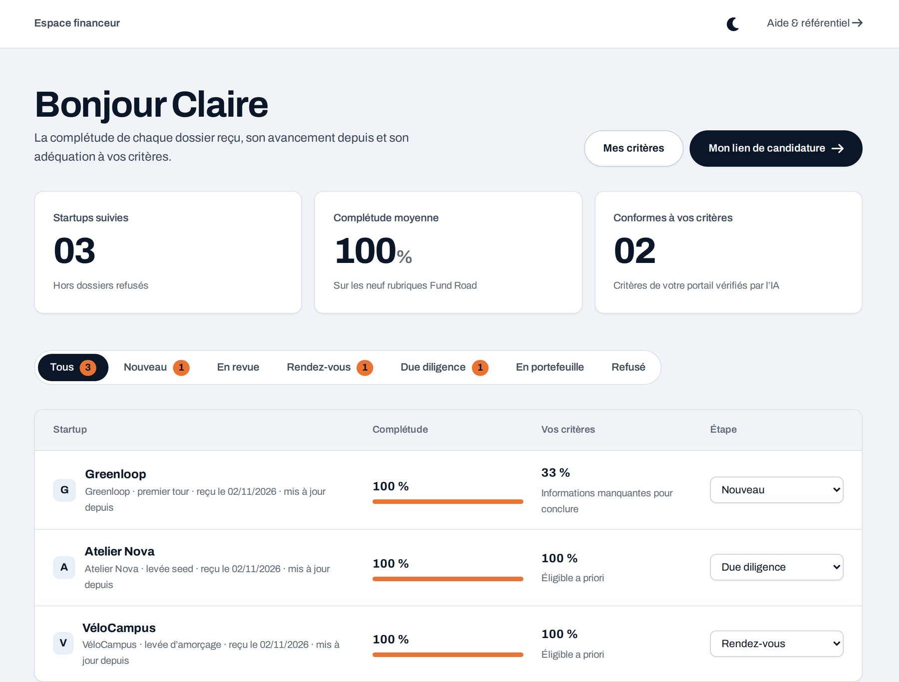

Donnez votre ticket, vos secteurs, votre stade. Recevez des dossiers structurés, sourcés, confrontés à vos critères.

Dix pages ici, quarante là. Jamais les mêmes informations au même endroit.
Vérifier qu’un projet colle à votre thèse demande de tout lire.
Le chiffre du deck et celui du prévisionnel ne concordent pas. Vous le voyez en rendez-vous.
L’IA cite l’extrait exact du document. Rien n’est inventé, tout se vérifie.
Un chiffre différent entre deck et prévisionnel est signalé, pas lissé.
Fund Road prépare et trie. Il ne juge ni les personnes ni les chances de financement.

dossiers pilotes analysés de bout en bout
rubriques renseignées sur le dossier moyen
contradictions relevées entre son deck et son business plan
Vous indiquez ticket, secteurs, stade, géographie.
Les startups vous envoient leur dossier depuis l’annuaire ou votre lien.
Complétude et adéquation sous les yeux : creuser ou passer.
Profil, critères, dossiers reçus, suivi.
Tout le réseau sur un même espace pendant le lancement.
Gratuit pour les business angels.